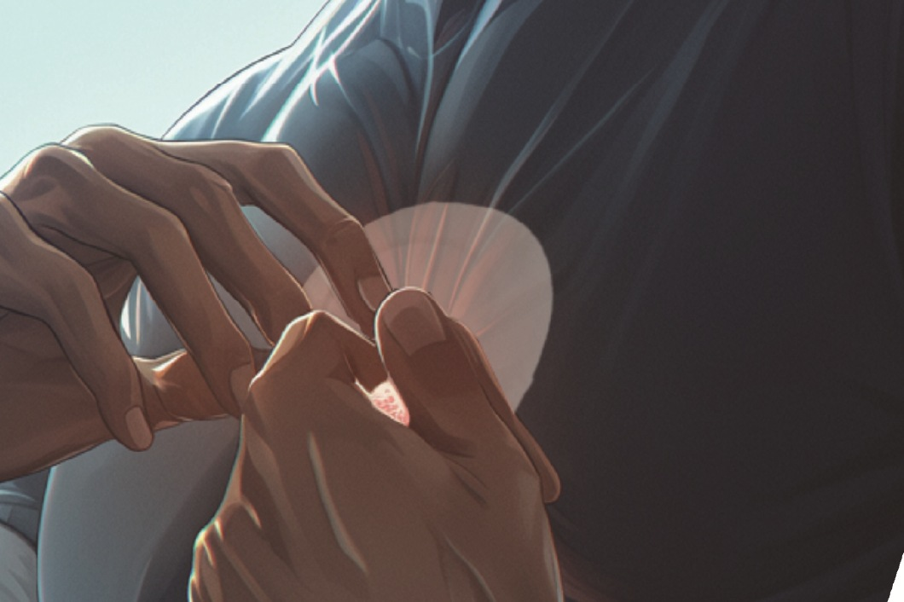

Speculative design · Course project
Five Elements
Music, touch, and a wearable concept for 2050.
Selected course projects and design explorations.

Speculative design · Course project
Music, touch, and a wearable concept for 2050.

Robot concept · Course project
A household pest-control robot concept.

Product & UX design · Team project
Image viewing and analysis in one workspace.

Wearable concept · 2023
A wrist-worn approach to navigation through touch.

Packaging concept · 2022
Body wash and a scrub brush in one playful form.

Product concept · 2022
A personal-care concept shaped by user and market research.

Mobility concept
A luggage concept for cosplay and convention visits.